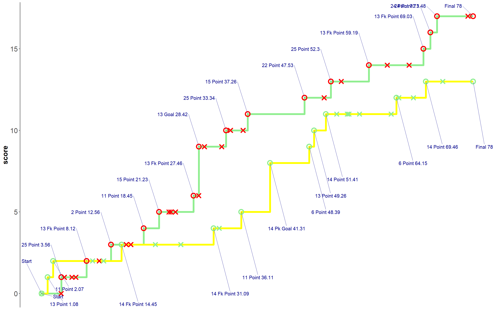
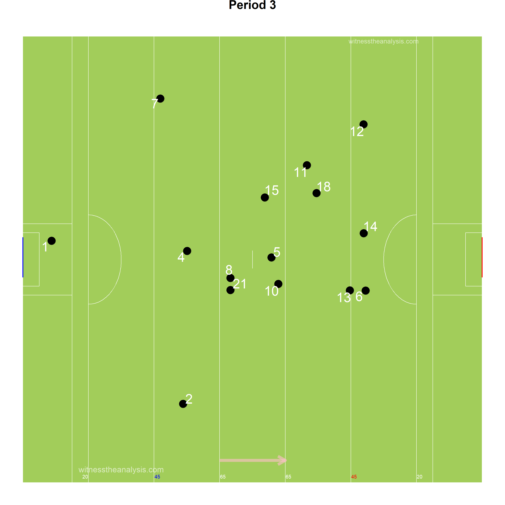
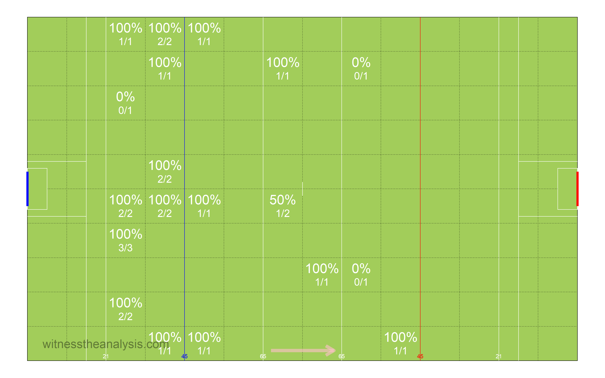
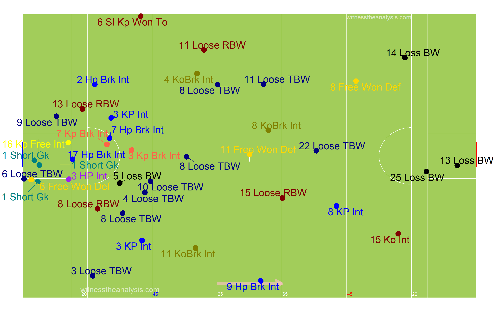
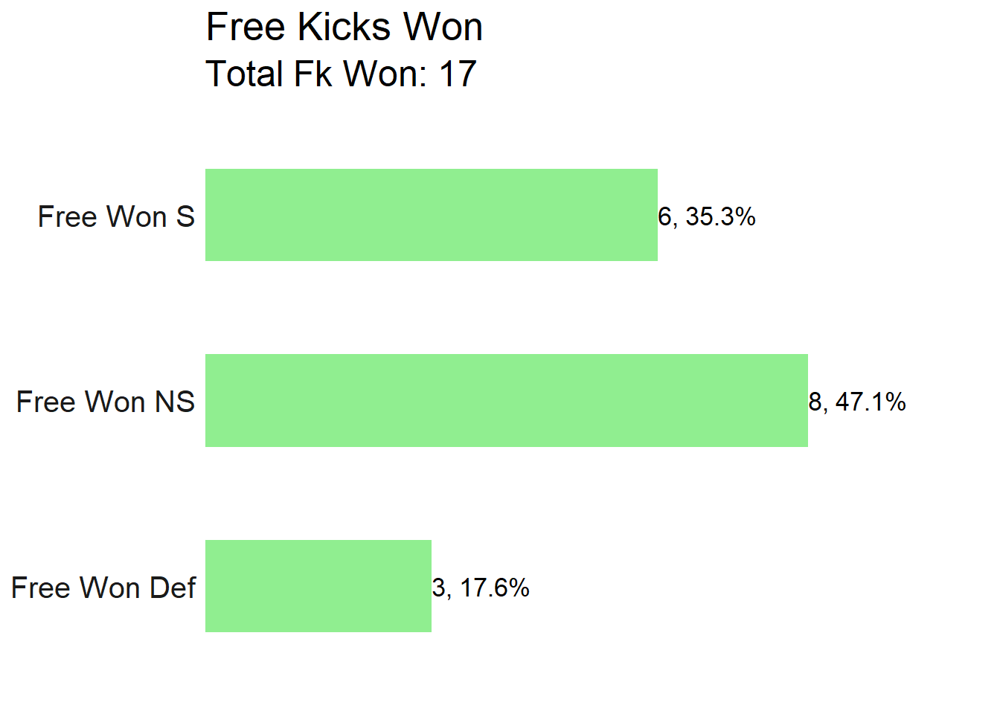
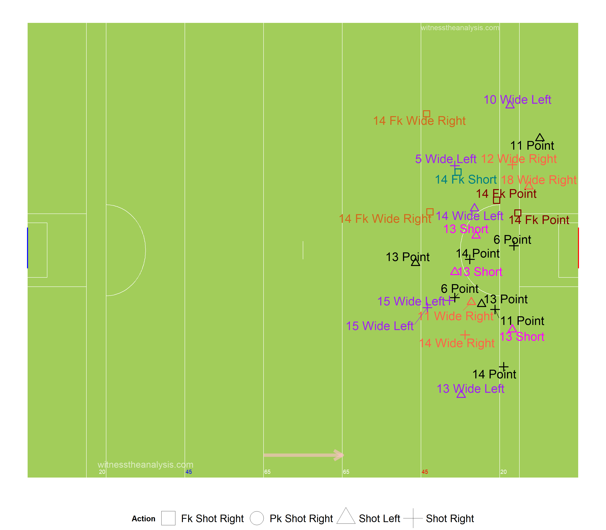
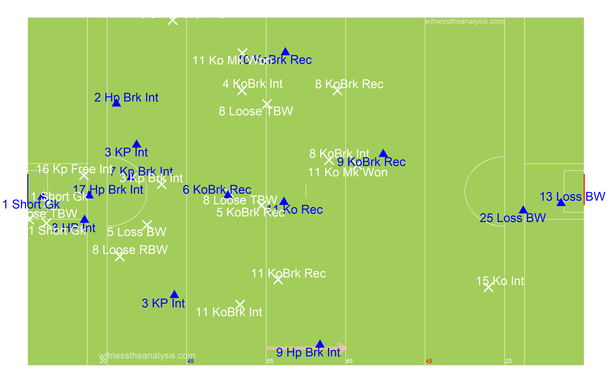
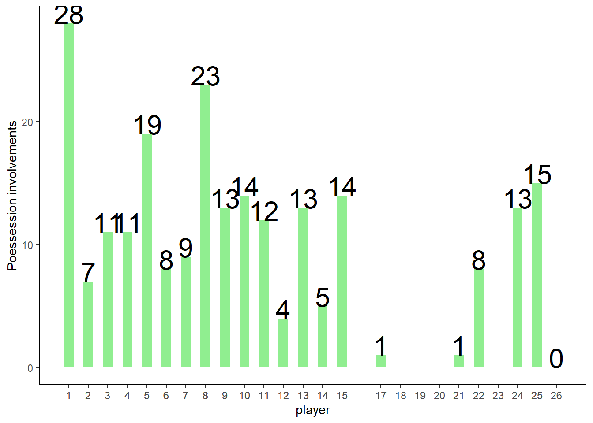

Mayo (1.14) vs Donegal (1.10)
Super 8s Round 3 - 2019
#Summary ##Starting Line Up (Number, Player, Playing time) ###Mayo
###Donegal
##Scores| Mayo.Donegal |
|---|
| Cillian O’Connor (1-4, 0-4f) Michael Murphy (1-4, 2f 1-0 pen) |
| Paddy Durcan (0-3) Paddy McBrearty (0-2) |
| James Carr (0-2) Niall O’Donnell (0-2) |
| Andy Moran (0-2) Daire O’Baoill (0-2) |
| Jason Doherty (0-1) |
| Chris Barrett (0-1) |
| Kevin McLoughlin (0-1) |
| Team | Score.Eff.. | Shots.PerPoss | Scores.PP | Op.Scores.PP | Fk.Score. | Ko. |
|---|---|---|---|---|---|---|
| Mayo | 39% | 53% | 23% | 17% | 57% | 58% |
| Donegal | 38% | 43% | 17% | 13% | 40% | 81% |
##Scoring Timeline 
##Score Differential
#Positioning & Possessions ##Average Position by Action ###Mayo ###Game
###Period
###Donegal ###Game
###Period 
##Areas of Play by Possession ###Mayo
###Donegal
##Denisty Map (All Actions) ###Mayo
###Donegal 
##Path of Possession
| Lines | X | X.1 | X.2 |
|---|---|---|---|
| Action | Colour | Action | Colour |
| Hand Pass | Black | Kickout Lost | Dark Red |
| Run | Blue | Kick Pass Left | Pink |
| Score | Yellow | Kick Pass Right | White |
| Miss shot | Red | Fk/Mk/Sl Pass | Light Blue |
| Kickout | Gold | Pass Loss | Red |
| Dots | |||
| Action | Colour | ||
| Possession Won | Purple | ||
| Ko/Pass Lost | Red | ||
| Fk Won | Blue | ||
| Fk Won (in 45) | Orange | ||
| Kickout Won | Black |
###Mayo
###Donegal
#General ##Kick Outs ###Mayo
###Kickout Efficiency
###Kickout Network - Mayo
###Donegal
###Kickout Efficiency

###Kickout Network - Donegal
##Turn overs/Possession Won
###Mayo

###Donegal
##Frees Won ###Mayo

###Donegal
##Frees Loss ###Mayo

###Donegal

#Attacking
##Attacking Stats| X | Mayo | X.1 | Donegal | X.2 |
|---|---|---|---|---|
| Shot | Score | shot | score | |
| AttTime | 00:14:13 | 00:07:05 | 00:10:19 | 00:04:43 |
| possave | 00:00:24 | 00:00:28 | 00:00:23 | 00:00:26 |
| phaseave | 00:00:18 | 00:00:20 | 00:00:16 | 00:00:17 |
| Origin Type | ||||
| Shot | Score | shot | score | |
| PW | 26 | 11 | 17 | 7 |
| Ko | 9 | 4 | 10 | 4 |
| Pitch Area Origin | ||||
| Shot | Score | shot | score | |
| Def | 25 | 12 | 13 | 5 |
| Def Mid | 4 | 0 | 4 | 1 |
| Att Mid | 2 | 1 | 9 | 4 |
| Att | 4 | 1 | 1 | 0 |
| Poss Duration | ||||
| secs | Shot | Score | shot | score |
| 0-9 | 4 | 2 | 3 | 0 |
| 10-19 | 12 | 6 | 11 | 5 |
| 20-29 | 10 | 3 | 3 | 1 |
| 30-39 | 5 | 1 | 7 | 4 |
| 40-49 | 1 | 0 | 2 | 0 |
| 50-59 | 2 | 2 | 0 | 0 |
| 60-69 | 0 | 0 | 1 | 1 |
| 70+ | 1 | 1 | 0 | 0 |
| Team | Poss | Phase | All.Shots | All.Scores | Shots.Per.Poss | Scores.PP | Shots.Op | Scores.Op | Score.Eff.. | Op.Scores.PP |
|---|---|---|---|---|---|---|---|---|---|---|
| Mayo | 66 | 82 | 35 | 15 | 53% | 23% | 28 | 11 | 39% | 17% |
| Donegal | 63 | 79 | 27 | 11 | 43% | 17% | 21 | 8 | 38% | 13% |
| Team | Poss Time | Ave Poss Shot | Ave Phase Shot | Ave Poss Scr | Ave Phase Scr | Ave Act Poss | Ave Act Sht | Ave Act Scr | ||
| Mayo | 00:19:55 | 00:00:24 | 00:00:18 | 00:00:28 | 00:00:20 | 9.00 | 12.06 | 14.40 | ||
| Donegal | 00:18:38 | 00:00:23 | 00:00:16 | 00:00:26 | 00:00:17 | 9.36 | 12.33 | 14.73 |
| Mayo | Shots | Time.secs | X | X.1 | X.2 | X.3 | X.4 | X.5 | X.6 |
|---|---|---|---|---|---|---|---|---|---|
| Area | 0-9 | 10-19 | 20-29 | 30-39 | 40-49 | 50-59 | 60-69 | 70+ | Total |
| Def | 0 | 8 | 10 | 3 | 1 | 2 | 0 | 1 | 25 |
| Def Mid | 1 | 2 | 0 | 1 | 0 | 0 | 0 | 0 | 4 |
| Att Mid | 0 | 2 | 0 | 0 | 0 | 0 | 0 | 0 | 2 |
| Att | 3 | 0 | 0 | 1 | 0 | 0 | 0 | 0 | 4 |
| Mayo | Scores | Time secs | |||||||
| Area | 0-9 | 10-19 | 20-29 | 30-39 | 40-49 | 50-59 | 60-69 | 70+ | Total |
| Def | 0 | 5 | 3 | 1 | 0 | 2 | 0 | 1 | 12 |
| Def Mid | 0 | 0 | 0 | 0 | 0 | 0 | 0 | 0 | 0 |
| Att Mid | 0 | 1 | 0 | 0 | 0 | 0 | 0 | 0 | 1 |
| Att | 2 | 0 | 0 | 0 | 0 | 0 | 0 | 0 | 2 |
| Donegal | Shots | Time secs | |||||||
| Area | 0-9 | 10-19 | 20-29 | 30-39 | 40-49 | 50-59 | 60-69 | 70+ | Total |
| Def | 0 | 3 | 2 | 6 | 2 | 0 | 0 | 0 | 13 |
| Def Mid | 1 | 1 | 0 | 1 | 0 | 0 | 1 | 0 | 4 |
| Att Mid | 1 | 7 | 1 | 0 | 0 | 0 | 0 | 0 | 9 |
| Att | 1 | 0 | 0 | 0 | 0 | 0 | 0 | 0 | 1 |
| Donegal | Scores | Time secs | |||||||
| Area | 0-9 | 10-19 | 20-29 | 30-39 | 40-49 | 50-59 | 60-69 | 70+ | Total |
| Def | 0 | 1 | 1 | 3 | 0 | 0 | 0 | 0 | 5 |
| Def Mid | 0 | 0 | 0 | 1 | 0 | 0 | 1 | 0 | 2 |
| Att Mid | 0 | 4 | 0 | 0 | 0 | 0 | 0 | 0 | 4 |
| Att | 0 | 0 | 0 | 0 | 0 | 0 | 0 | 0 | 0 |
##Open Play Shots - Location & Outcome
###Mayo
###Shot Efficiency - Mayo
###Donegal
###Shot Efficiency - Donegal
##All Shots - Location & Outcome ###Mayo
###Donegal

##All Shots Origin by Possession ###Mayo (Blue = Score) 
###Donegal (Blue = Score) 
##Open Play Shot Origin by Phase ###Mayo (Blue = Score)
###Donegal (Blue = Score)
##Shot Network ###Mayo
###Donegal
##Score Network ###Mayo
###Donegal
#Passing
##Pass Breakdown| Mayo.Donegal |
|---|
| Total Pass 192 213 |
| Hp 157 168 |
| Kp 22 27 |
| Kp Left 3 6 |
| Kp Right 19 21 |
| Fk Pass 10 11 |
| Sl Pass 0 3 |
| Mk Kp 2 1 |
| Mk Hp 0 0 |
| Sl Kp Won To 1 3 |
| 45 Pass 0 0 |
##All Passes ###Mayo
###Donegal

##Passes into 45 ###Mayo
###Donegal
##Passes Inside Opp 65 ###Mayo
###Donegal
##Pass Network ###Mayo
###In Degree (Number of Players a Player Received a Pass from)
## McDonagh Moran Keegan P Durcan A O Shea Carr O Donoghue Harrision Coen McLoughlin S O Shea Barrett Boyle
## 11 11 10 10 9 9 8 7 7 7 6 5 5
## Doherty O Connor Boland Coen Ruane Hennelly Higgins (bc) J Durcan
## 5 5 4 3 2 1 0 0###Out Degree (Number of Players a Player Made a Pass to)
## Keegan A O Shea S O Shea Harrision Doherty McDonagh O Donoghue Boyle P Durcan O Connor Carr Moran McLoughlin
## 12 11 11 9 8 7 7 6 6 6 6 6 6
## Hennelly Barrett Coen Boland Higgins (bc) Coen Ruane J Durcan
## 5 5 5 5 1 1 1 1###Strength in (Number of Passes Received by a Player)
## Keegan McDonagh P Durcan A O Shea Moran Carr S O Shea O Donoghue McLoughlin Harrision Coen O Connor Doherty
## 21 17 17 16 15 13 12 11 9 8 8 8 7
## Barrett Boyle Boland Coen Ruane Hennelly Higgins (bc) J Durcan
## 6 5 5 4 2 1 0 0###Strength Out (Number of Passes/Shots Made by a Player)
## A O Shea Keegan S O Shea Harrision P Durcan McDonagh O Connor O Donoghue Moran Coen Doherty Boyle Carr
## 26 22 15 13 12 11 10 10 9 8 8 7 7
## McLoughlin Hennelly Barrett Boland Ruane Higgins (bc) Coen J Durcan
## 7 5 5 5 2 1 1 1###Betweenness Centrality (Flow of Passes through a Player)
## Boland Carr S O Shea McDonagh Coen Keegan Moran A O Shea P Durcan McLoughlin Barrett Doherty O Donoghue
## 0.1448912637 0.1232763712 0.0740231298 0.0620816483 0.0555636599 0.0488696999 0.0390567035 0.0330803119 0.0305462105 0.0281628113 0.0244057332 0.0220601294 0.0218530446
## Harrision Boyle O Connor Ruane Hennelly Coen Higgins (bc) J Durcan
## 0.0171835813 0.0108484098 0.0064350270 0.0030075188 0.0012134503 0.0008097166 0.0000000000 0.0000000000###Closeness Centrality (How Well connected and central a Player is within the Teams Network)
## S O Shea Keegan McDonagh A O Shea P Durcan Moran Harrision O Donoghue Barrett Doherty Carr McLoughlin Coen
## 0.7692308 0.7407407 0.7407407 0.7142857 0.6896552 0.6896552 0.6666667 0.6666667 0.6451613 0.6451613 0.6451613 0.6451613 0.6250000
## Boland Boyle O Connor Hennelly Coen Ruane Higgins (bc) J Durcan
## 0.6060606 0.5882353 0.5882353 0.5555556 0.5263158 0.4444444 0.4000000 0.3846154###Entropy (The Unpredictability in who a Player Passes to/Takes shot)
## S O Shea A O Shea Ruane Moran P Durcan Keegan Coen Harrision Coen O Connor Carr McDonagh O Donoghue Doherty McLoughlin
## 0.9312335 0.9461621 0.9463946 0.9509180 0.9558746 0.9606500 0.9609640 0.9610582 0.9631397 0.9684276 0.9685922 0.9686382 0.9687862 0.9701274 0.9796133
## Boland Barrett Boyle Hennelly
## 0.9848587 0.9866600 0.9881091 1.0000000###Global clustering coefficient (Groups of Players who pass to each other)
## [1] 0.6186896###eigen_centrality (How well connected the well connected are)
## A O Shea Keegan P Durcan S O Shea McDonagh O Donoghue Harrision Moran O Connor Carr Coen McLoughlin Doherty
## 1.000000000 0.990153718 0.764564727 0.665364881 0.636013603 0.541261489 0.527406323 0.526704080 0.461696831 0.435772336 0.382496972 0.361414258 0.360677628
## Boyle Barrett Hennelly Boland Coen Ruane Higgins (bc) J Durcan
## 0.248757303 0.247798128 0.148937464 0.128253331 0.098574893 0.029851693 0.016954609 0.004989957##Donegal
###In Degree (Number of Players a Player Received a Pass from)
## McFadden O Baoill O Donnell Thompson Murphy McHugh McBrearty McLoone McMenamin Langan
## 13 12 11 9 9 8 8 8 6 6
## Brennan (bc 63) McFadden Ferry Doherty McGee Brennan Gallen Patton McHugh McGrath Ward
## 6 5 4 4 4 4 3 2 1 1
## McGettigan
## 0###Out Degree (Number of Players a Player Made a Pass to)
## McFadden O Donnell McLoone McMenamin McHugh O Baoill McFadden Ferry Murphy Thompson Langan
## 14 11 9 8 8 8 8 7 6 6
## Brennan (bc 63) Doherty McGee Patton McGrath Brennan McBrearty Ward Gallen McHugh
## 6 5 5 4 4 4 4 3 2 2
## McGettigan
## 0###Strength in (Number of Passes Received by a Player)
## McFadden O Donnell Murphy O Baoill McLoone McHugh Thompson McBrearty McMenamin Brennan (bc 63)
## 24 19 18 17 15 13 12 12 11 8
## Langan Brennan McFadden Ferry McGee Patton Doherty Gallen McHugh Ward McGrath
## 7 6 5 5 4 4 4 3 2 1
## McGettigan
## 0###Strength Out (Number of Passes/Shots Made by a Player)
## McFadden O Donnell McLoone McMenamin O Baoill Murphy McHugh Thompson McFadden Ferry Langan
## 30 17 15 14 14 13 11 10 9 8
## Patton McBrearty Brennan (bc 63) McGee Doherty McGrath Brennan Ward McHugh Gallen
## 7 7 7 6 5 4 4 4 3 2
## McGettigan
## 0###Betweenness Centrality (Flow of Passes through a Player)
## McFadden O Donnell O Baoill McLoone Thompson McMenamin Murphy McBrearty Brennan (bc 63) Langan
## 0.1291128707 0.0864327000 0.0695751507 0.0515528177 0.0433059192 0.0345093765 0.0209722579 0.0168273509 0.0134555108 0.0121897961
## McHugh McFadden Ferry Doherty McGee Brennan Patton McGrath McHugh Ward Gallen
## 0.0113795707 0.0111068026 0.0080294486 0.0053296703 0.0030314757 0.0029340981 0.0009569378 0.0003508772 0.0000000000 0.0000000000
## McGettigan
## 0.0000000000###Closeness Centrality (How Well connected and central a Player is within the Teams Network)
## McFadden O Donnell O Baoill McLoone Murphy McMenamin McHugh Thompson Brennan (bc 63) McFadden Ferry
## 0.46511628 0.45454545 0.44444444 0.44444444 0.42553191 0.41666667 0.41666667 0.41666667 0.41666667 0.40816327
## McBrearty Langan McGee Doherty Brennan Patton Gallen McHugh McGrath Ward
## 0.40816327 0.40816327 0.39215686 0.38461538 0.37735849 0.37037037 0.36363636 0.35714286 0.35087719 0.35087719
## McGettigan
## 0.04761905###Entropy (The Unpredictability in who a Player Passes to/Takes shot)
## McMenamin Patton O Donnell Ward McHugh McFadden Thompson McHugh Langan McLoone
## 0.9127294 0.9487695 0.9583473 0.9591479 0.9591479 0.9601236 0.9609795 0.9638471 0.9641844 0.9659768
## Murphy McBrearty O Baoill Brennan McGee Brennan (bc 63) McFadden Ferry McGrath Doherty Gallen
## 0.9661746 0.9683098 0.9708205 0.9739760 0.9766147 0.9782224 0.9902871 1.0000000 1.0000000 1.0000000###Global clustering coefficient (Groups of Players who pass to each other)
## [1] 0.6045016###eigen_centrality (How well connected the well connected are)
## McFadden O Donnell Murphy O Baoill McLoone McMenamin McHugh Thompson McBrearty Brennan (bc 63)
## 1.00000000 0.69821712 0.68098691 0.61221317 0.59536415 0.59438222 0.56633096 0.48492015 0.42330290 0.34162855
## McFadden Ferry Langan Patton McGee Doherty Ward Brennan McHugh Gallen McGrath
## 0.32374943 0.31487306 0.29815963 0.25954160 0.22128004 0.20780885 0.19649196 0.14059861 0.12593767 0.10758616
## McGettigan
## 0.02295532#Player Stats ##Player On Ball Possession (Number, Player, Total) ###Mayo
###Donegal
##Posessions Per Playing Time
##Player % involvement and shot efficiency| Team | ply | opshots | Totteamshot | opscr | Totteamscr | convrate |
|---|---|---|---|---|---|---|
| Mayo | Hennelly | 0 | 0% | 0 | 0% |
|
| Mayo | Barrett | 1 | 4% | 1 | 13% | 100% |
| Mayo | Harrision | 0 | 0% | 0 | 0% |
|
| Mayo | Higgins (bc) | 0 | 0% | 0 | 0% |
|
| Mayo | Keegan | 2 | 8% | 0 | 0% | 0% |
| Mayo | Boyle | 0 | 0% | 0 | 0% |
|
| Mayo | Coen | 1 | 4% | 0 | 0% | 0% |
| Mayo | A O Shea | 0 | 0% | 0 | 0% |
|
| Mayo | S O Shea | 0 | 0% | 0 | 0% |
|
| Mayo | McDonagh | 3 | 12% | 0 | 0% | 0% |
| Mayo | Doherty | 2 | 8% | 1 | 13% | 50% |
| Mayo | P Durcan | 4 | 15% | 3 | 38% | 75% |
| Mayo | O Connor | 0 | 0% | 1 | 13% |
|
| Mayo | Coen | 3 | 12% | 0 | 0% | 0% |
| Mayo | Carr | 4 | 15% | 2 | 25% | 50% |
| Mayo | O Donoghue | 1 | 4% | 0 | 0% | 0% |
| Mayo | Moran | 4 | 15% | 2 | 25% | 50% |
| Mayo | McLoughlin | 1 | 4% | 1 | 13% | 100% |
| Mayo | Boland | 0 | 0% | 0 | 0% |
|
| Mayo | Ruane | 0 | 0% | 0 | 0% |
|
| Mayo | J Durcan | 0 | 0% | 0 | 0% |
|
| Team | ply | opshots | Totteamshot | opscr | Totteamscr | convrate |
|---|---|---|---|---|---|---|
| Donegal | Patton | 0 | 0% | 0 | 0% |
|
| Donegal | McGrath | 0 | 0% | 0 | 0% |
|
| Donegal | Doherty | 0 | 0% | 0 | 0% |
|
| Donegal | McMenamin | 0 | 0% | 0 | 0% |
|
| Donegal | McHugh | 1 | 5% | 0 | 0% | 0% |
| Donegal | O Baoill | 2 | 10% | 2 | 25% | 100% |
| Donegal | McFadden Ferry | 0 | 0% | 0 | 0% |
|
| Donegal | McFadden | 0 | 0% | 0 | 0% |
|
| Donegal | McGee | 0 | 0% | 0 | 0% |
|
| Donegal | Thompson | 1 | 5% | 0 | 0% | 0% |
| Donegal | O Donnell | 3 | 14% | 2 | 25% | 67% |
| Donegal | Brennan | 1 | 5% | 0 | 0% | 0% |
| Donegal | McBrearty | 6 | 29% | 2 | 25% | 33% |
| Donegal | Murphy | 4 | 19% | 2 | 25% | 50% |
| Donegal | Langan | 2 | 10% | 0 | 0% | 0% |
| Donegal | McLoone | 1 | 5% | 0 | 0% | 0% |
| Donegal | Brennan (bc 63) | 0 | 0% | 0 | 0% |
|
| Donegal | Ward | 0 | 0% | 0 | 0% |
|
| Donegal | Gallen | 0 | 0% | 0 | 0% |
|
| Donegal | McGettigan | 0 | 0% | 0 | 0% |
|
| Donegal | McHugh | 0 | 0% | 0 | 0% |
|
##Open Play Shots vs Play Time
##Open Play Scores vs Play Time
##Open Play Shots vs Open Play Score
##Player Possession Involvement ###Mayo 
###Donegal
##Player Shot Involvement ###Mayo
###Donegal
##Player Score Involvement ###Mayo
###Donegal
##Actions and Zones ##By Period ###Mayo
###Donegal
##Zones Frequency ###Mayo
###Donegal